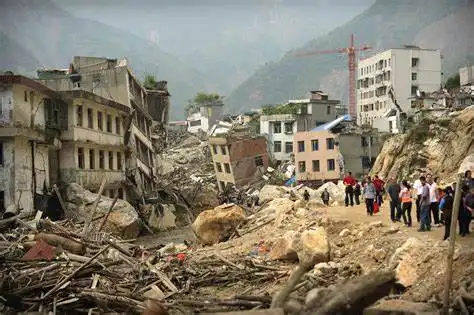
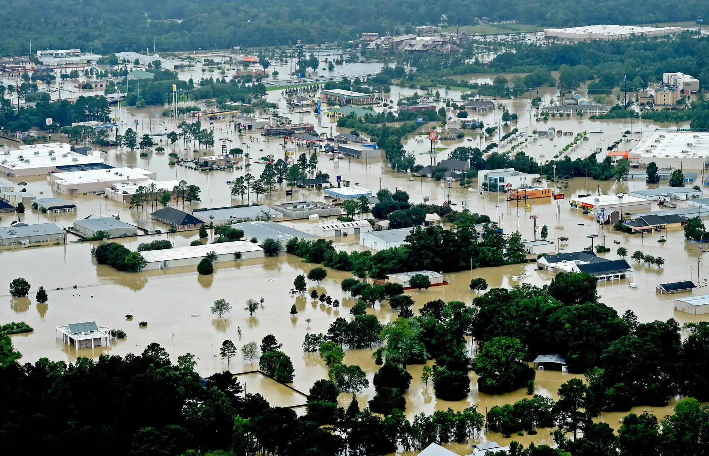
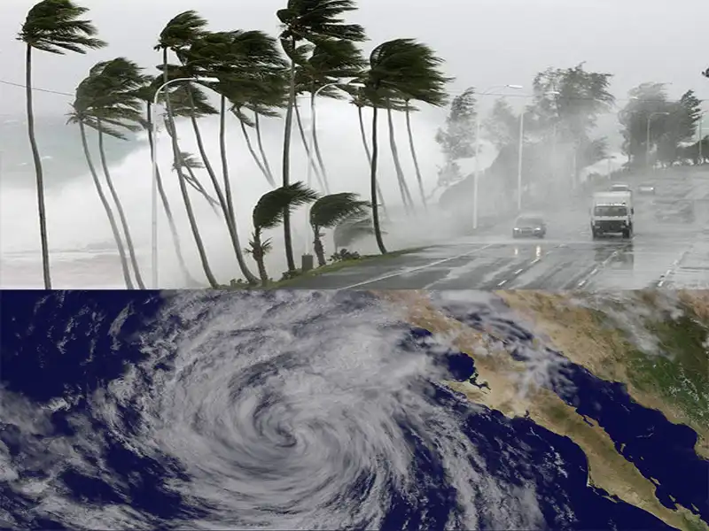
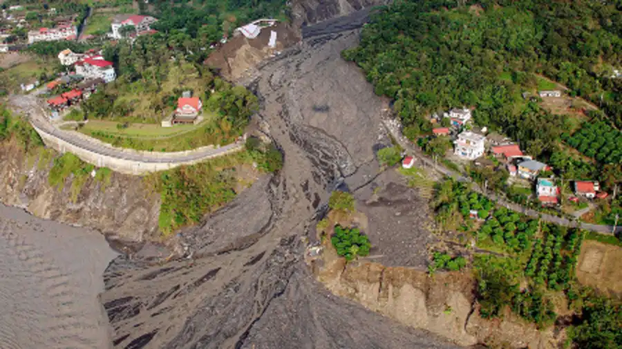

Destacado
¿Qué es un Kit de Emergencia de 72 Horas?
Un kit de emergencia de 72 horas, a menudo llamado "Kit de supervivencia" o "mochila de supervivencia", es un bolso portátil de artículos esenciales diseñado para ayudar a las personas a sobrevivir durante 72 horas en caso de un desastre o emergencia.
La duración de 72 horas se basa en la suposición de que los servicios de emergencia podrían tardar hasta tres días en llegar a las personas afectadas por desastres.
Importancia de estar preparados
¿Cómo preparar a mi familia ante un terremoto?
La mejor manera es tener un plan de emergencia que incluya a todos los miembros del hogar.
Descargar PDF
¿Qué debe contener un kit de supervivencia de 72 horas?
Haz clic aquí para ver la lista del kit de emergencia.
CLick Aqui
¿Cómo puedo crear un plan de evacuación efectivo para mi hogar?
Sigue los pasos en el PDF descargable para crear un plan efectivo.
¿Qué debo hacer en caso de una emergencia médica durante un desastre natural?
Mantén la calma - Evalúa la situación - Pide ayuda - Proporciona primeros auxilios básicos - Sigue las instrucciones oficiales - Prepárate para evacuar
Terremoto
Los terremotos son movimientos súbitos de la corteza terrestre causados por la liberación de energía acumulada en las fallas geológicas. Pueden ocurrir sin previo aviso y generar daños estructurales, deslizamientos de tierra y tsunamis en zonas costeras. En Centroamérica, la región ha experimentado numerosos terremotos debido a su ubicación en el Cinturón de Fuego del Pacífico. En los últimos 10 años, se han registrado más de 100 eventos sísmicos significativos. Estos terremotos han causado pérdidas económicas considerables, afectando infraestructuras críticas y provocando la evacuación de miles de personas. Las consecuencias incluyen el colapso de edificios, interrupciones en los servicios básicos y, en algunos casos, la pérdida de vidas humanas.
Descargar guía de preparaciónInundaciones
Las inundaciones ocurren cuando el agua cubre áreas que normalmente están secas, ya sea por lluvias intensas, desbordamientos de ríos o fallas en infraestructuras hidráulicas. Pueden provocar daños en viviendas, cortes de energía y contaminación del agua potable. En Centroamérica, la frecuencia de inundaciones ha aumentado significativamente en la última década debido a cambios climáticos y fenómenos meteorológicos extremos. En los últimos 10 años, la región ha experimentado más de 200 eventos de inundaciones importantes. Estas inundaciones han causado pérdidas económicas considerables, con daños estimados en más de 10.000 millones de dólares y afectando a millones de personas. Además, han provocado desplazamientos masivos, la destrucción de cultivos y la interrupción de servicios básicos, lo que resalta la importancia de estar preparados para enfrentar estos desastres naturales.
Descargar guía de preparaciónHuracanes
Los huracanes son tormentas tropicales de gran intensidad con fuertes vientos, lluvias torrenciales y marejadas ciclónicas. Pueden causar inundaciones, destrucción de infraestructuras y cortes prolongados de servicios básicos. En Centroamérica, la región ha enfrentado un promedio de 17 huracanes anuales en los últimos 20 años. En los últimos 10 años, se han registrado varios eventos significativos, incluyendo los huracanes Eta e Iota en 2020, que causaron daños devastadores en la región2. Estos fenómenos han provocado pérdidas económicas significativas, con daños totales estimados en 39.000 millones de dólares y afectando a 29 millones de personas. Además, los huracanes han dejado un saldo de aproximadamente 5.000 muertes en la región1.
Descargar guía de preparaciónDeslizamientos
Los deslizamientos de tierra ocurren cuando masas de suelo y rocas se desplazan ladera abajo debido a lluvias intensas, sismos o erosión del terreno. Pueden destruir viviendas, caminos y afectar el suministro de agua potable. En Centroamérica, los deslizamientos de tierra son una amenaza frecuente debido a la combinación de terrenos montañosos, altas precipitaciones y actividad sísmica. En los últimos 10 años, se han registrado más de 150 deslizamientos significativos en la región. Estos eventos han causado la pérdida de vidas, el desplazamiento de comunidades enteras y daños económicos considerables. La destrucción de infraestructuras, la interrupción del suministro de agua potable y la pérdida de tierras agrícolas son algunas de las graves consecuencias de los deslizamientos de tierra.
Descargar guía de preparación